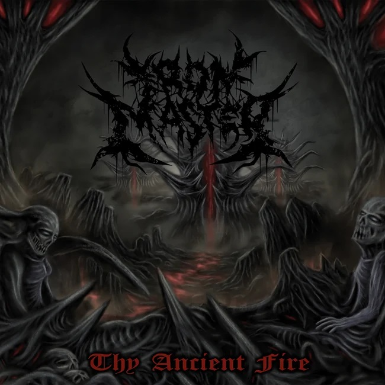
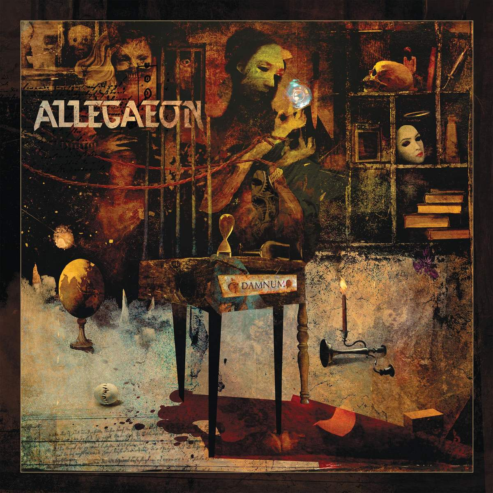

Feb 20-Feb 26
Ironmaster -- Thy Ancient Fire | Death Metal | Feb 11th 2022 |
Nam ullamcorper eget lacus ac laoreet. Sed sed venenatis quam. Vestibulum nunc neque, pretium non nibh nec, sollicitudin dapibus
sapien. Nunc varius sapien sed diam dignissim ullamcorper nec ut sapien. Nulla luctus, tellus sed facilisis sagittis, diam risus elementum libero, non scelerisque sem velit non sem. Phasellus gravida, nibh a elementum dapibus, purus risus
vestibulum diam, mattis elementum velit lacus eu velit. Nunc hendrerit est at ullamcorper pulvinar. Nullam neque lacus, accumsan sit amet volutpat non, tincidunt at tortor. Cras fringilla imperdiet eros ac commodo. Sed vel dignissim ante.
Quisque pellentesque, ante nec iaculis condimentum, mi mi vestibulum nunc, vel accumsan augue elit ut mi. Nam et nisl purus.
Allegaeon -- Damnum | Technical Death Metal | Feb 25th 2022 |
Mauris nec odio ipsum. Vestibulum pulvinar elementum augue, in sagittis augue ullamcorper et. Suspendisse ac velit lacus. Aenean justo nisl,
condimentum eget posuere et, maximus a dui. Ut ut est condimentum, rhoncus mi eu, hendrerit mi. Pellentesque eu ex pulvinar, pretium ipsum in, tristique urna. Mauris convallis orci elit, in venenatis sem viverra vel. Integer egestas magna
eget felis porttitor accumsan. Aliquam porttitor erat eros. Sed lacus justo, finibus sed varius sed, mattis vel dolor. Ut non odio metus.